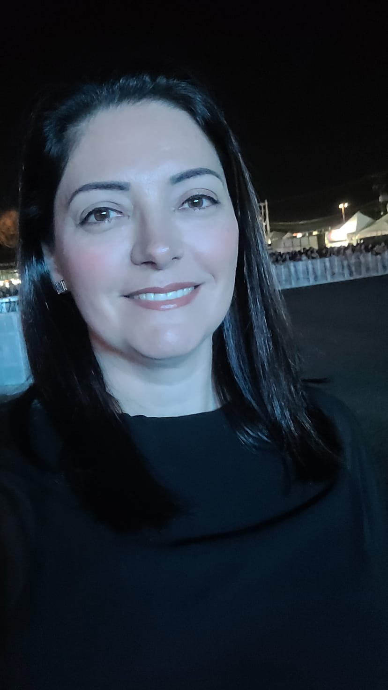
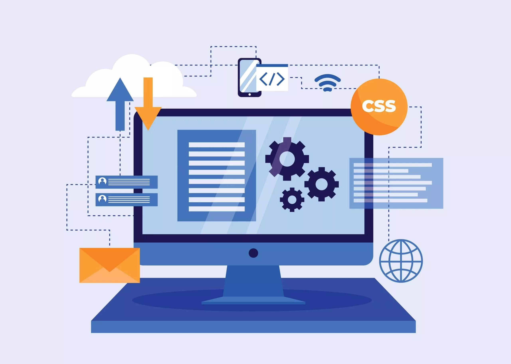

Quem sou eu?
Sejam bem-vindos!
Me chamo Vladismara mas todos me chamam de Vlá. Tenho 47 anos, moro na cidade de Manoel Ribas desde os 5, sou nascida em Sao Paulo capital. Sou casada com o Alexandre e temos uma filha de 16 anos, Lara.
Conheca um pouco de mim e dos componentes que trabalho...

Sejam bem-vindos!
Me chamo Vladismara mas todos me chamam de Vlá. Tenho 47 anos, moro na cidade de Manoel Ribas desde os 5, sou nascida em Sao Paulo capital. Sou casada com o Alexandre e temos uma filha de 16 anos, Lara.

Por: Vlá Martins
Comecei minha carreira como prof em 1997 na Escola Municipal Renato Siloto. No ano de 2006 comecei a trabalhar no colégio Reni com o Curso Técnico em Desenvolvimento de Sistemas e continuo trabalhando até hoje.

Por: Vlá Martins
Minha conquista mais recente foi ter sido selecionada para participar do programa do Estado do Paraná, Ganhando o Mundo Professor, onde estive durante 3 semanas na cidade de Toronto, Canadá.
Por: Vlá Martins
Componente da 1ª Série do Médio Integral. Todas as turmas, exatas ou humanas tem esse componente. Sao duas aulas por semana sempre no laboratório de informática.

Por: Vlá Martins
Componente da 1ª série do Curso Técnico em Desenvolvimento de Sistemas. Conta com 3 aulas semanais, sendo 1 teórica em sala de aula e 2 práticas no Laboratório de Informática.

Por: Vlá Martins
Componente da 2ª série do Curso Técnico em Desenvolvimento de Sistemas. Conta com 3 aulas semanais, todas sao aulas práticas no Laboratório de Informática, e eventualmente temos alguma delas teórica.